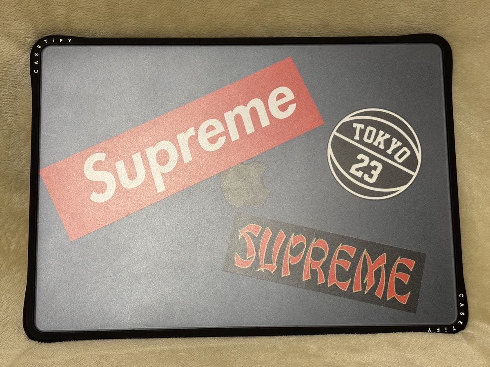

MacBookに「何も足さない」ケースを選んだ理由。CASETiFY クリアケースを1か月使った感想
MacBookを買ったとき、いちばん迷ったのは本体のスペックではなく、ケースでした。
結論から書くと、選んだのは CASETiFY（ケースティファイ）の無地の透明ケース です。1か月使って、「これでよかった」と思っている理由と、1つだけ困っていることを書きます。
なぜ透明にしたか
MacBookのケースは、大きく3種類あります。
- ハードケース（上下をパチッとはめる）
- スリーブ（持ち運ぶときだけ入れる袋）
- キーボードカバーだけ付ける
私が欲しかったのは「毎日使う机の上で、傷から守りつつ、MacBookの見た目を消さないもの」でした。
スリーブは机の上では守ってくれません。柄のあるハードケースは、閉じたときに「MacBookっぽさ」が消えます。
そこで、透明のハードケースに絞りました。
透明ケースはいろいろなメーカーから出ていて、ほかのメーカーのものとも最後まで迷いました。
CASETiFYの無地・透明を選んだ決め手
決め手は、「あとから自分で好きにできる」 ことです。
透明なので、本体の色とリンゴのマークはそのまま見えます。何も貼らなくても「MacBookそのもの」の見た目が残ります。
一方で、ケースの内側や外側に好きなステッカーを貼れば、自分だけの1台に変えられます。飽きたら剥がして、また違う顔にできる。
「買ったときに完成しているケース」ではなく、「自分で完成させるケース」というのが、スニーカーを自分好みに履き込んでいく感覚に近くて、しっくりきました。

これが、いまの私のMacBookです。ステッカーを3枚、自分で入れてみました。
それだけでオリジナル感が出ます。透明だと、こうやってアレンジできるのがいい。
使ってよかったところ
- MacBookの見た目が消えない。 閉じていても、ちゃんとMacBookに見える。
- 机の上でも守ってくれる。 スリーブと違って、使っている最中の擦り傷や、物を上に置いたときの傷を気にしなくなった。
- 自分でアレンジできる。 ステッカー1枚で印象が変わる。無地だからこそ、何を貼っても合う。
正直、困っているところ
1つだけあります。ケースを付けた状態だと、持ち運び用のバッグに収まらなくなりました。
ハードケースは上下に厚みが数ミリ足されるので、MacBookのサイズぴったりで作られているスリーブやバッグのポケットには、入らないか、かなり無理をして入れることになります。
私の場合は、いつも使っている手持ちのバッグに、ケースを付けたままでは収まらなくなりました。
これから買う人は、「ケースを付けた状態の厚み」でバッグが合うかを先に確認してください。
こんな人に向いている・向いていない
向いている人
- MacBookの見た目を隠したくない人
- ステッカーなどで自分なりにアレンジしたい人
- 家や職場の机で使う時間が長い人
向いていない人
- 外に持ち出すことが多く、バッグがMacBookのサイズぴったりの人（厚みの問題）
- 衝撃からしっかり守りたい人（これは薄い透明ケースではなく、厚手のケースやスリーブの役目）
まとめ
CASETiFYの無地透明ケースは、「MacBookに何も足さない」ように見えて、「あとから自分で足せる」ケースでした。
困ったのはバッグに入らなくなったことだけ。そこが大丈夫なら、おすすめできます。
ちなみに私は、メルカリで6,000円で買いました。